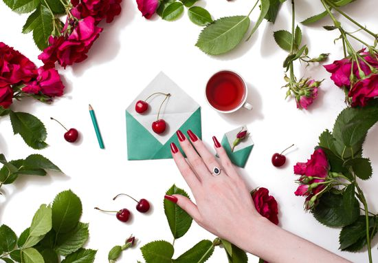

<!-- We don't need full layout here, because this page will be parsed with Ajax-->
<!-- Top Navbar-->

<div class="pages">
  <!-- Page, data-page contains page name-->
  <div data-page="about" class="page">
    <!-- Scrollable page content-->
    <div class="page-content">
      <div class="navbar">
  <div class="navbar-inner">
    <div class="left"><a href="#" class="back link"> <i class="icon icon-back"></i><span>Back</span></a></div>
    <div class="center sliding"> </div>
    <div class="right">
      <!-- Right link contains only icon - additional "icon-only" class--><a href="#" class="link icon-only open-panel"> <i class="icon icon-bars"></i></a>
    </div>
  </div>
</div>
      <div class="content-block presentcon">
    
    <div class="row no-gutter">
        <div class="col-100">

        </div>
    </div>
    <h4>
إتيكيت الدعوات : ما هي الفترة الزمنية لارسالها؟
لا يكفي فقط اعتماد الاتيكيت في تطبيق كيفية إرسال الدعوات بل أيضاً من المهم جداً احترام توقيت إرسالها للآخرين.

من هنا، تعرفك خبيرة الإتيكيت فيرا يمين على إتيكيت الفترة الزمنية لإرسال وتوجيه الدعوات.
وفي هذا الاطار، دعت خبيرة الإتيكيت فيرا يمين الى ضرورة إرسال الدعوة الى عشاء رسمي قبل 3 الى 6 اسابيع، في حين أن الدعوة لعشاء غير رسمي يجب أن تحصل قبل عدة ايام الى 3 اسابيع.

ولفتت الى أن الدعوة الى غداء يجب أن تكون قبل عدة أيام الى أسبوعين، في حين أن حفلات الكوكتيل يجب أن تحصل قبل أسبوع.

وأشارت فيرا يمين الى ضرورة الدعوة الى حفل الاستقبال قبل أسبوعين الى 4 أسابيع، في حين أن الدعوة لحفل الزفاف يجب أن تحصل قبل 4 أسابيع الى شهرين.

وأعلنت أن الدعوة لحفل خطبة يجب أن تكون قبل 3 إلى 4 أسابيع، في حين أن دعوة حفل التخرج يجب أن تحصل قبل 4 أسابيع.

وكشفت خبيرة الإتيكيت فيرا يمين أن الدعوة لافطار أول أيام رمضان يجب أن تحصل قبل 10 أيام الى 4 أسابيع، لافتة الى أن دعوة غداء أول أيام العيد يجب أن تكون قبل 10 أيام الى أسبوعين.

  . وأكدت أن الدعوة الى حضور حفلات عيد الميلاد يجب أن تحصل قبل 10 أيام الى اسبوعين 
    </h4>
      </div>
    </div>
  </div>
</div>